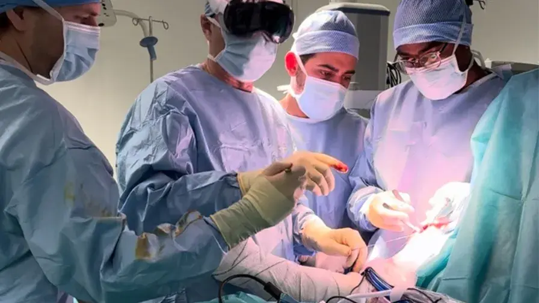

01 Hôpital universitaire Avicenne · Bobigny
Remettre le mouvement au centre.
Une expertise universitaire en chirurgie orthopédique et traumatologique, un parcours coordonné et une innovation qui reste au service de l’humain.
Service publicConsultations secteur 1
Prise en chargeDu diagnostic au suivi

Chef de servicePr Thomas Gregory
Première mondiale
en réalité mixte
© AP–HP
Un service hospitalo-universitaire engagé avec
02 Nos expertises
Prendre soin du geste.
Restaurer la fonction.
L’équipe prend en charge les pathologies du membre supérieur et inférieur, les traumatismes et leurs séquelles, avec une expertise reconnue de la main.
Centre universitaire · Membre supérieur
La précision au bout des doigts.
Chirurgie de la main et du poignet, syndrome du canal carpien, lésions nerveuses et urgences : une prise en charge experte, y compris par technique WALANT lorsque indiquée.
- Pathologies de la main et du poignet
- Microchirurgie et neuropathies périphériques
- Urgences main 24h/24
03 Votre parcours
Un chemin clair,
à chaque étape.
Comprendre, décider ensemble, intervenir au bon moment puis accompagner la récupération. Le parcours s’adapte à votre situation clinique.
Commencer mon parcours-
01
Écouter & diagnostiquer
Consultation, examen clinique et lecture de votre imagerie pour poser un diagnostic précis.
-
02
Décider avec vous
Une stratégie personnalisée, chirurgicale ou non, expliquée avec ses objectifs et ses étapes.
-
03
Intervenir
Des techniques adaptées à votre pathologie, au sein du plateau chirurgical de l’hôpital.
-
04
Retrouver le mouvement
Suivi postopératoire, rééducation et reprise progressive de vos activités.
04 Innovation chirurgicale
Voir plus loin.
Opérer plus juste.
À Avicenne, réalité mixte et intelligence artificielle sont explorées comme des outils d’aide au geste, de partage d’expertise et de formation — toujours au bénéfice du patient.

© AP–HP
Une culture pionnière
De la première mondiale à la chirurgie augmentée.
En 2017, une intervention de l’épaule assistée par une plateforme collaborative de réalité mixte est réalisée à Avicenne. En 2021, le service pilote 24 heures de chirurgie holographique à travers 13 pays. En 2024, l’exploration se poursuit avec un dispositif de réalité mixte de nouvelle génération.
Lire l’article AP–HPPremière intervention de l’épaule assistée en réalité mixte
pays réunis lors des 24H de chirurgie holographique
Nouvelle étape avec un dispositif de réalité mixte
05 Direction du service
Pr Thomas
Gregory
Chirurgien orthopédiste & traumatologue
Professeur à l’Université Sorbonne Paris Nord
Notre cap
Précision du geste.
Innovation utile.
Soin humain.
Sous la direction du Pr Thomas Gregory, l’équipe associe expertise clinique, enseignement universitaire et recherche appliquée pour faire progresser la prise en charge.
L’équipe médicale

© AP–HP
06 Un hôpital, une histoire
L’héritage d’Avicenne.
L’élan de demain.
Derrière l’entrée historique, le bâtiment Larrey B accueille depuis 2018 la chirurgie orthopédique et traumatologique dans un environnement hospitalier modernisé.
Découvrir l’Hôpital AvicenneBâtiment Larrey B · © AP–HP
07 Venir & contacter
Votre parcours
commence ici.
Prendre rendez-vous
01 48 95 71 00Par téléphone ou via le portail patient AP–HP · Consultation publique conventionnée secteur 1
Demande en ligneHôpital Avicenne125 rue de Stalingrad
93000 Bobigny
Tramway T1Arrêt Hôpital Avicenne
Métro 5 ou 7 en correspondance
08 Besoin d’aide maintenant ?
Urgence main
ou urgence vitale.
Urgence de la main
L’accueil dédié se fait au sein du service des urgences de l’Hôpital Avicenne, 24h/24 et 7j/7.
Consulter les informations AP–HPUrgence vitale
Douleur intense, malaise, détresse ou danger immédiat : contactez le SAMU.
Appeler le 1509 Questions fréquentes
Avant votre
venue.
Comment demander un premier rendez-vous ?
La demande peut être faite en ligne sur le portail patient AP–HP ou par téléphone au 01 48 95 71 00.
Que dois-je apporter en consultation ?
Votre courrier d’adressage, vos examens d’imagerie et comptes rendus récents, ainsi que vos documents administratifs habituels.
Où se trouve le service ?
À l’Hôpital Avicenne, 125 rue de Stalingrad à Bobigny. Le service est accessible par le tramway T1, arrêt Hôpital Avicenne.
Les consultations sont-elles conventionnées ?
Oui. Les consultations publiques indiquées par l’AP–HP sont conventionnées secteur 1.